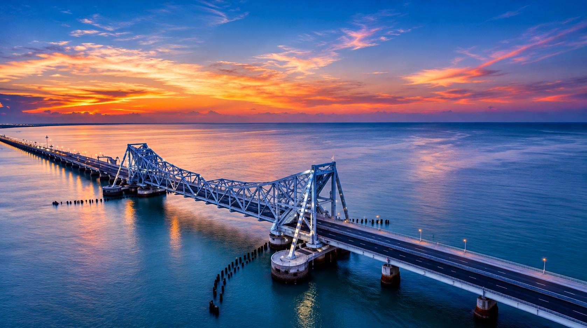
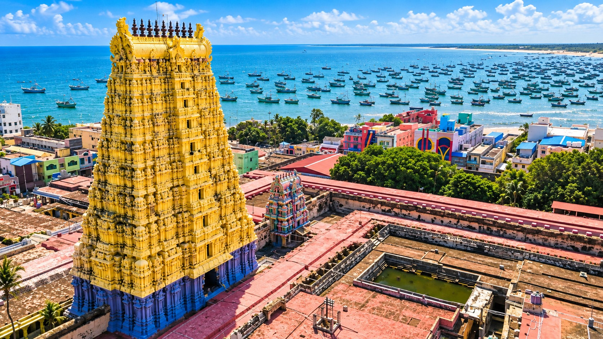
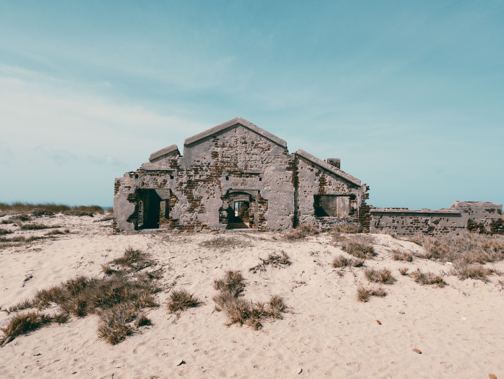
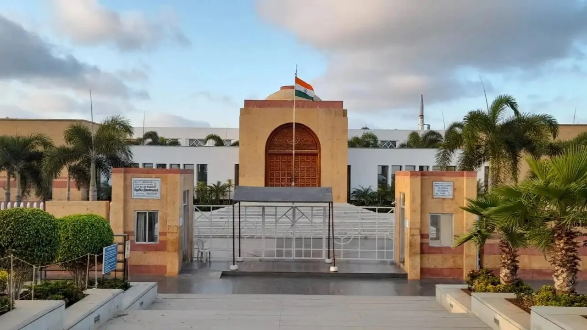
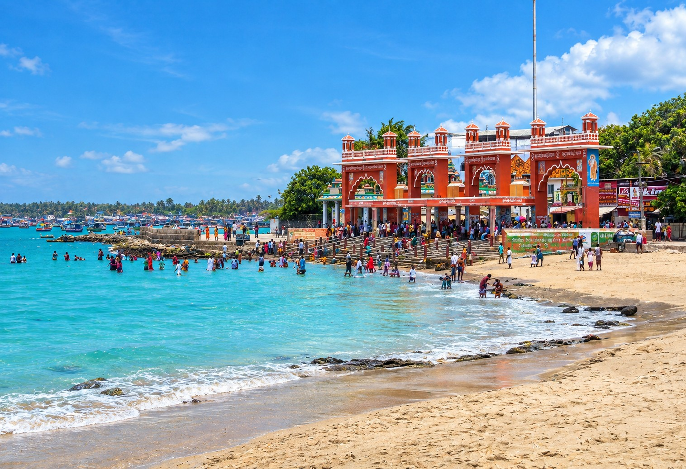
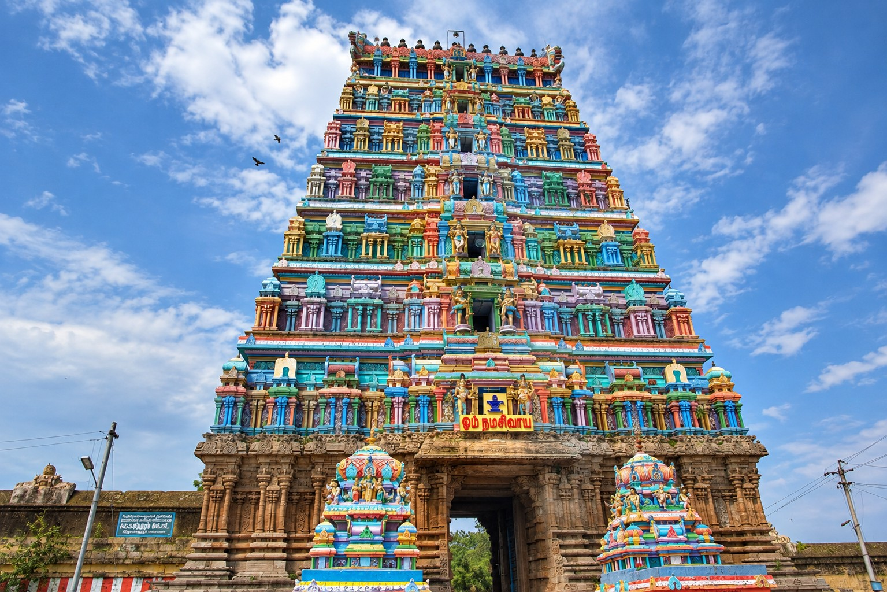
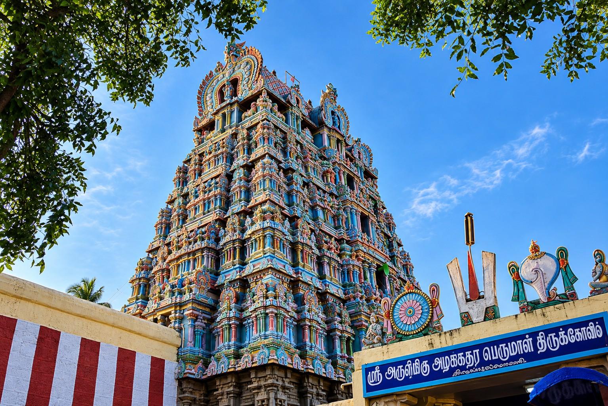
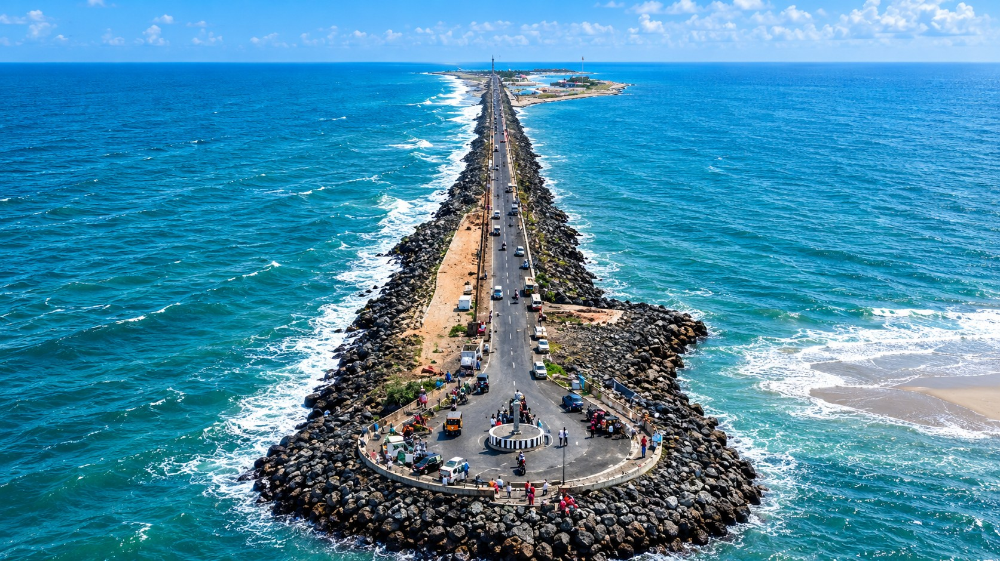

THE 8 ESSENTIAL WONDERS
Each destination embodies centuries of devotion, engineering mastery, or breathtaking coastal drama.

01. Sacred Jyotirlinga1. Ramanathaswamy Temple
One of the twelve revered Jyotirlinga shrines and the southernmost pillar of India's sacred Char Dham circuit. Enclosed within towering granite prakaras, it features the magnificent 1,212-pillared third corridor—the longest temple hallway in the world—and 22 holy theertham wells renowned for medicinal and spiritual cleansing.
2. Pamban Bridge
Inaugurated in 1914, this 2.06 km cantilever sea bridge connects Mandapam on the Indian mainland with Rameswaram Island. Operating across corrosive saline sea winds for over a century with its iconic Scherzer rolling lift span, it is now joined by India's first state-of-the-art vertical lift railway sea bridge.

03. Ghost Town Ruins3. Dhanushkodi
Situated at the southeastern terminus of Pamban Island, Dhanushkodi is a legendary coastal settlement submerged by the cataclysmic 1964 cyclone. Today, its weathered church nave, railway station water tanks, and post office stand dramatically preserved against shifting white sands and turquoise waters.

04. National Memorial4. Dr. A.P.J. Abdul Kalam Memorial
Constructed by the Defence Research and Development Organisation (DRDO) over Dr. Kalam’s resting place at Pei Karumbu. Designed with majestic yellow sandstone domes reminiscent of Rashtrapati Bhavan and stone carved Chettinad arches, it houses personal belongings, missile models, replicas of the Pokhran nuclear test, and his paintings.

05. Sacred Sea Shore5. Agni Theertham
The holy seashore facing the majestic Eastern Gopuram of Ramanathaswamy Temple. Legend relates that Lord Agni offered prayers here to purify himself after verifying Goddess Sita's purity. Unlike normal ocean beaches, the water here is exceptionally calm, placid, and free of rolling waves.

06. Emerald Nataraja6. Thiru Uthirakosamangai Temple
One of the most ancient Shiva shrines on earth, dating back over 3,000 years and celebrated by saint poet Manikkavasagar in the Thiruvasagam. The temple is worldwide renowned for housing a priceless 5.5-foot idol of Lord Nataraja carved from a single piece of emerald (Maragatham), unveiled only once annually on Arudra Darshanam.

07. Divya Desam7. Thiruppullani Temple
A sanctified 108 Divya Desam temple dedicated to Lord Adi Jagannatha Perumal. Here, Lord Rama is depicted reclining on sacred Dharba grass (Dharba Sayana Ramar) for three days, seeking the Ocean King Samudra Raja's permission and guidance to construct the Rama Sethu causeway to Lanka.

08. Pristine Dunes8. Dhanushkodi Beach
An untouched coastal frontier where the calm, greenish waters of the Palk Bay meet the deep, restless azure waves of the Gulf of Mannar. Pristine dunes, salt-glazed shells, gentle winds, and migratory sea birds make this one of the most sublime and dramatic coastal landscapes in Asia.